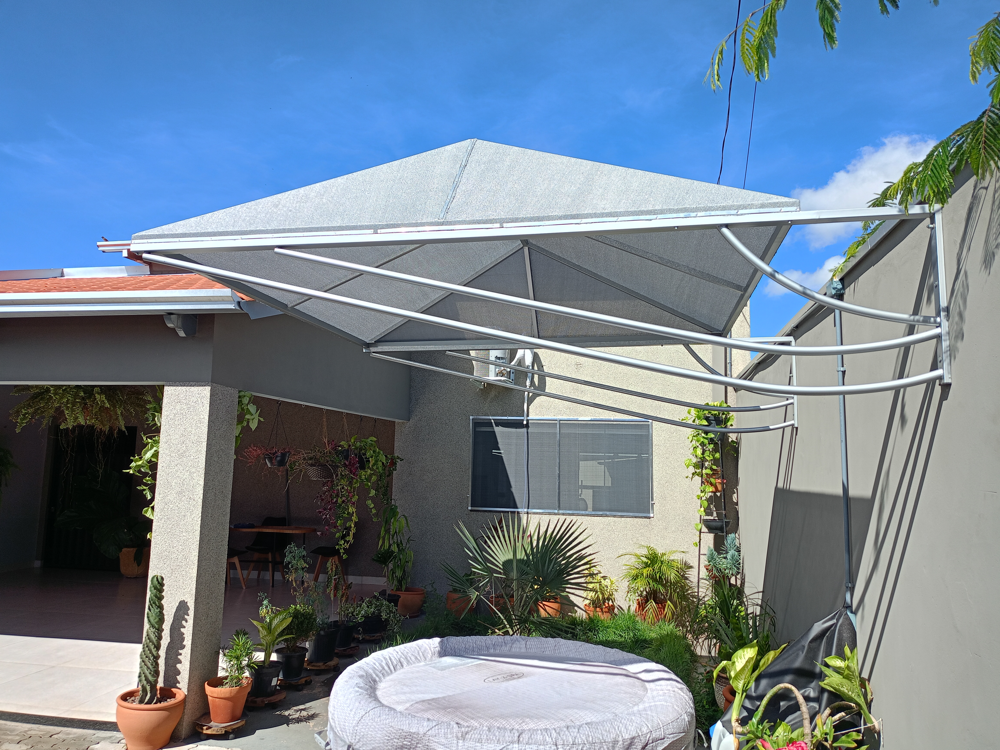
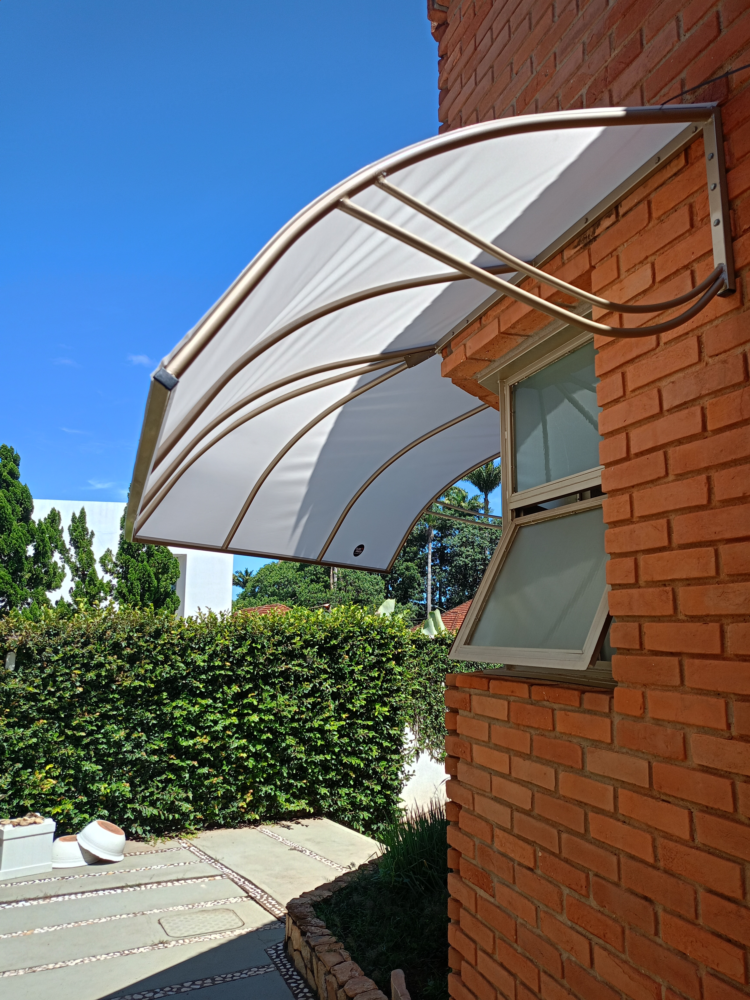
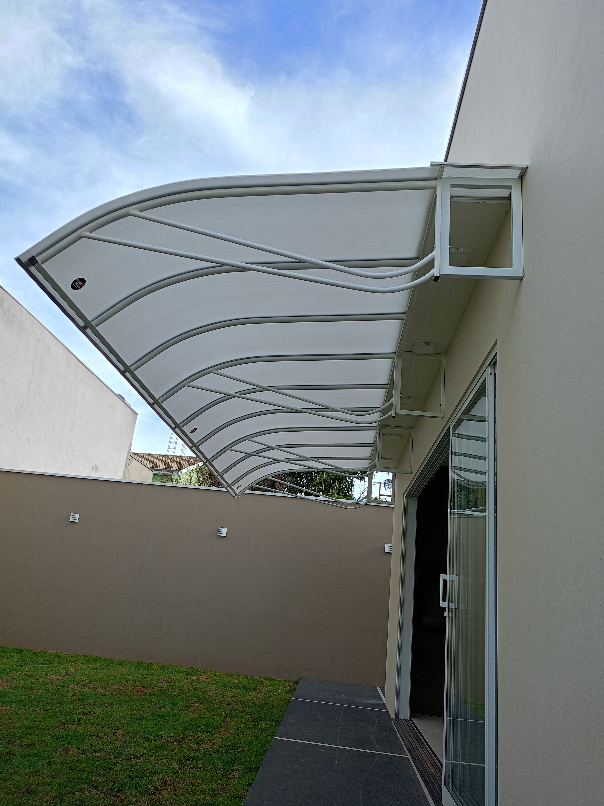
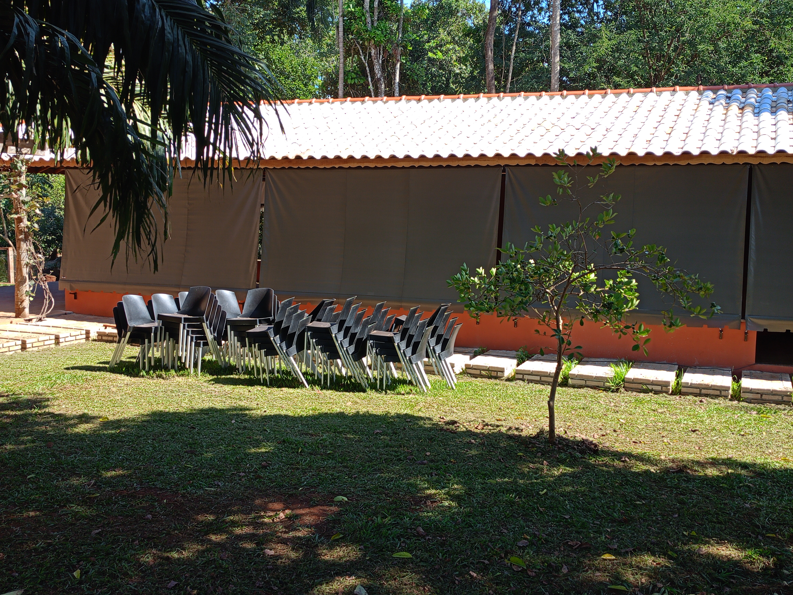
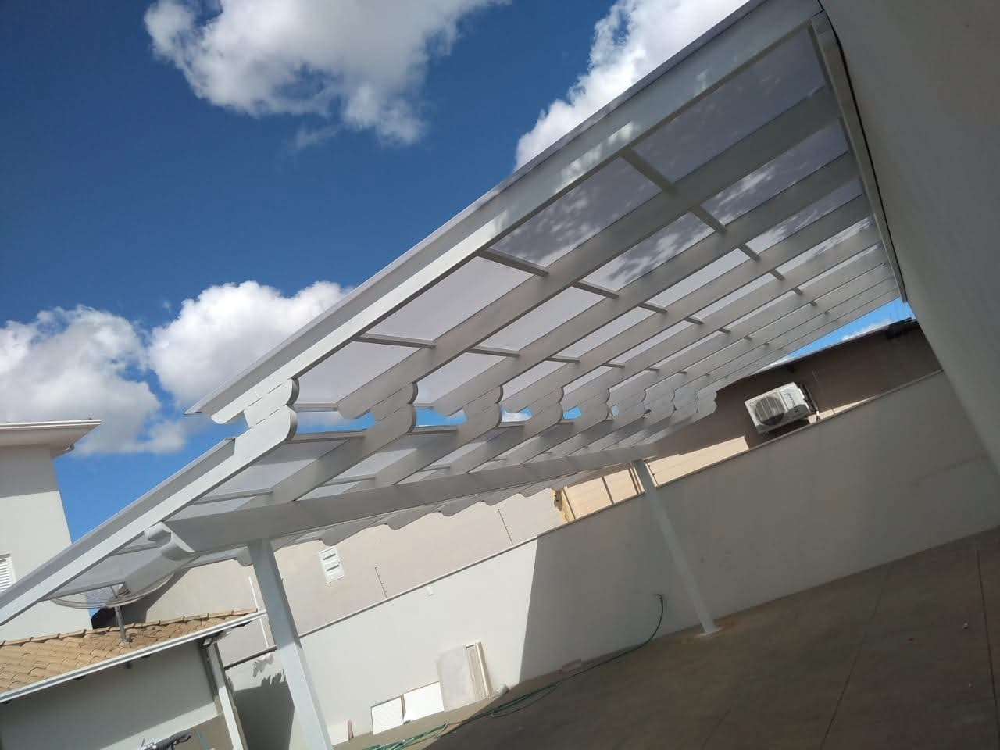
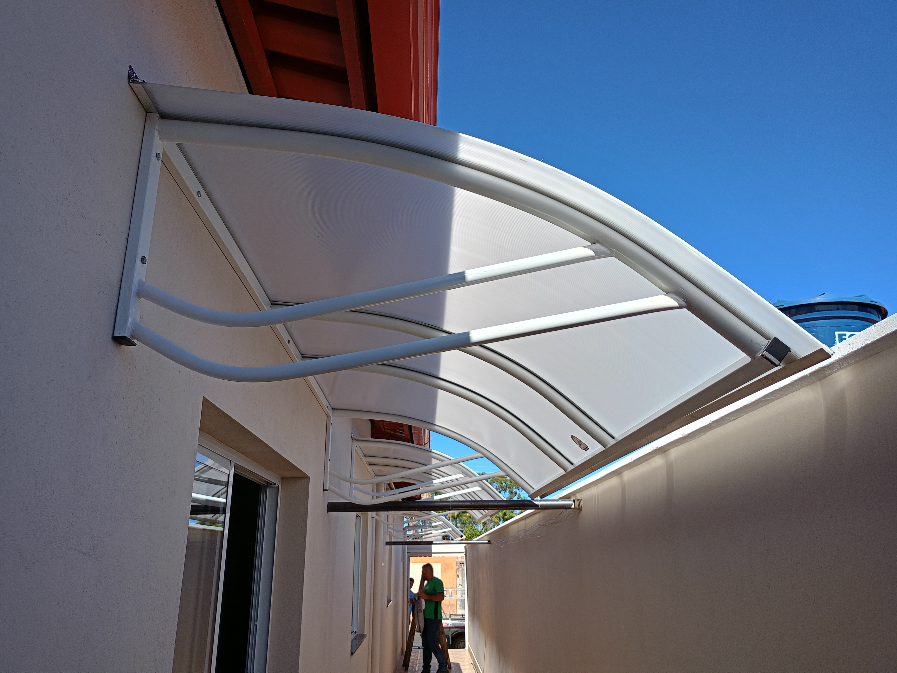
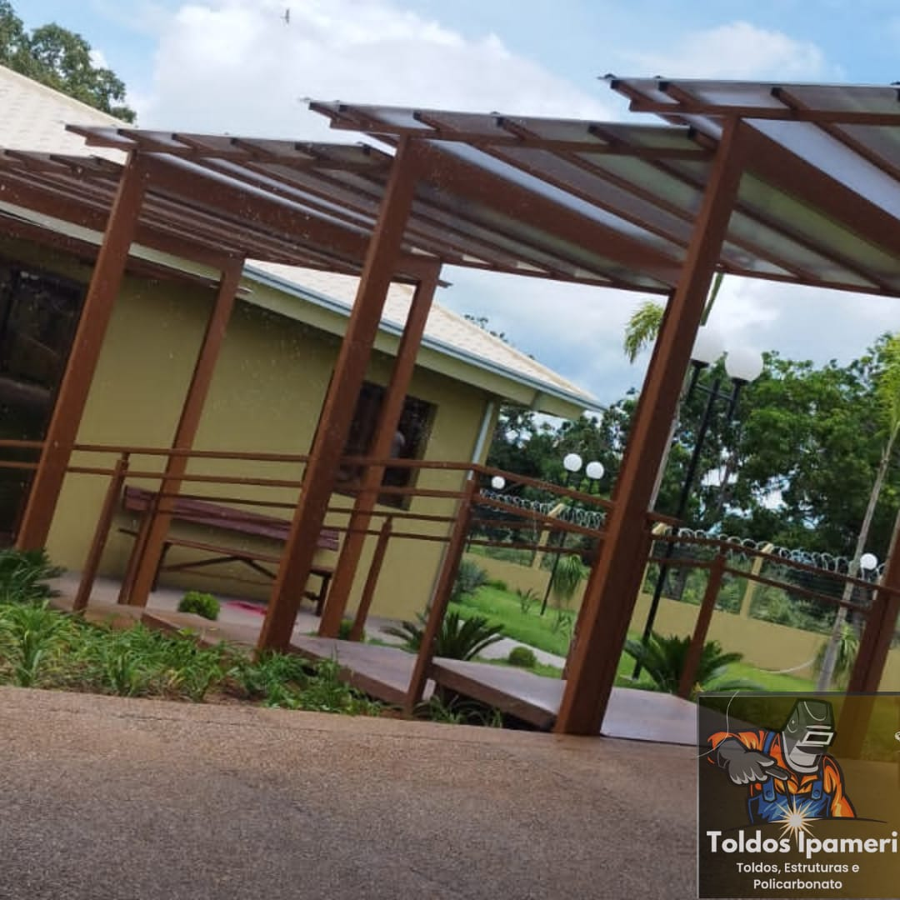
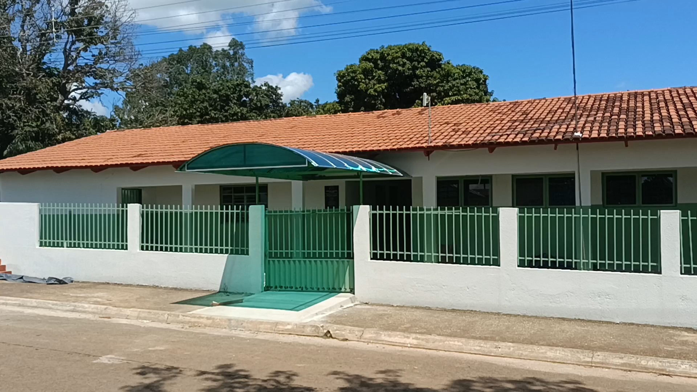

Cobertura em lona
Ipameri, Urutaí, Pires do Rio, Campo Alegre, Catalão e Caldas Novas
Há mais de 20 anos, a Toldos Ipameri atende residências, comércios e áreas de lazer com toldos retráteis, toldos cortina, policarbonato alveolar, pergolados, tendas e telas mosquiteiro.


Soluções que combinam proteção e acabamento

Ideais para varanda, área gourmet, corredores e fachadas que precisam de sombra em alguns horários e liberdade visual em outros.

Uma solução resistente e eficiente para quem busca cobertura constante contra sol e chuva, com acabamento alinhado à arquitetura do local.

Uma escolha elegante para garagem, corredor, jardim de inverno, portas e áreas de lazer que pedem claridade natural sem abrir mão da cobertura.

O pergolado entrega presença estética e conforto, criando um espaço mais convidativo para descanso, recepção e convivência.

Para eventos, áreas abertas e ambientes que precisam de ventilação com bloqueio de insetos, a Toldos Ipameri oferece soluções que ampliam o conforto do dia a dia.
Obras em destaque
Fachadas, varandas, quintais, garagens, acessos e ambientes de convivência ganham sombra, proteção e um visual mais valorizado com soluções pensadas para cada espaço.

Estruturas desenhadas para unir circulação confortável, proteção climática e leitura visual harmoniosa do imóvel.
Compromisso em cada etapa
A empresa avalia o local e indica a solução mais adequada para uso, incidência de sol e tipo de cobertura.
Cada estrutura é pensada para o ambiente, o formato da fachada e a finalidade do cliente.
O cuidado com acabamento, alinhamento e firmeza faz parte da entrega em cada serviço realizado.
A Toldos Ipameri cresceu valorizando confiança, compromisso e atenção com clientes e amigos.
Uma história que começou em 2003
A Toldos Ipameri nasceu do desejo de construir um trabalho sólido, com atendimento sério e soluções duráveis para quem precisa cobrir, proteger e valorizar ambientes. Hoje são mais de duas décadas de mercado no ramo de toldos, tendas, pergolados e coberturas em policarbonato alveolar e lona.
A base da empresa está em atenção, responsabilidade, respeito e compromisso. É isso que sustenta cada atendimento em Ipameri e nas cidades da região.
Contato e localizacao
Envie os dados do seu projeto para receber atendimento mais rapido e confira no mapa como chegar ate a empresa em Ipameri.
Preencha as informacoes principais e o envio abre uma conversa no WhatsApp com a mensagem pronta para agilizar o atendimento.
Rua Abrao Farah, quadra 6, lote 4, bairro Dom Vital, Ipameri - GO.